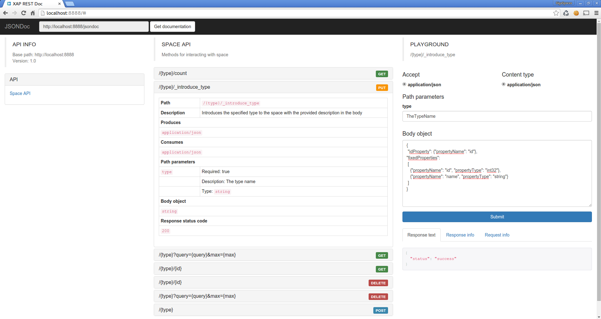

The RESTful service is a Processing Unit that once it is deployed starts an embedded jetty server along with a REST service allowing Interaction with the Space via the RESTful HTTP Methods.
The Space's name and a port number must be specified. In case of multiple instances of the REST Processing Unit, the port will be the specified port plus a running number starting with zero.
The REST service is not supported with embedded space. Thus we recommend using it as a separate processing unit.
For information on how to use the CLI, see the Command Line Interface page in the Administration guide.
A pre-configured processing unit template is provided and can be found at
A REST Service can be started as part of a custom processing unit by specifying the <os-core:rest > annotation as follows:
<os-core:space-proxy id="theSpace" space-name="theGigaSpace">
<os-core:rest id="mySpaceRestService" giga-space="theGigaSpace" port="8081" />
or
<os-core:rest id="mySpaceRestService" space-name="mySpace" port="8081" lookup-groups="myGroups" />
| Attribute name | Use | Description |
|---|---|---|
| port | required | The port which the rest service will be available on. If there are multiple instances, the port for each instance will be port+runningNumber (starting from 0) |
| giga-space | required* | Reference to GigaSpace |
| space-name | required* | Name of the Space that the rest should connect to. |
| lookup-groups | optional | The lookup groups to be used when looking for the specified space. A comma separated list of group names. Use with space-name attribute only. |
| lookup-locators | optional | The lookup locators to be used when looking for the specified space. A comma separated list of host:port. Use with space-name attribute only. |
*giga-space and space-name attributes can not be used together.
Another option is to deploy the REST service as a Web Processing Unit, as in this example.
#Specify the space parameters using the following properties:
spaceName=mySpace
lookupGroups=myGroups
#lookupLocators=
#datetime_format=
Date string is parsed with a different parser from
We provide a default format yyyy-MM-dd HH:mm:ss but you can override it by providing the rest.datetime_format property in the deployment step or by specify it in the pu.xml:
<os-core:rest id="mySpaceRestService" space-name="mySpace" port="8081" lookup-groups="myGroups">
<os-core:properties>
<props>
<prop key="datetime_format">yyyy-MM-dd HH:mm:ss</prop>
</props>
</os-core:properties>
</os-core:rest>
The REST API supports writing nested SpaceDocument.
The JSON representation is:
{
"typeName": "theTypeOfTheNestedObject-SpaceDocument",
"version": 0, //optional
"transient": true/false, //optional
"properties": {
"prop1": "val1",
"prop2": "val2"
}
}
Once the REST Processing Unit is deployed, you can browse the API and test its methods by accessing the main page at: http://<rest-instance-host-address>:<rest-port>/.
The page should look like:

In case that the ports were in use, the deployment will fail.
Not supported with embedded space thus we recommend using it as a separate processing unit.
The API support writing for Document objects only.
Supported collections: Arrays and Lists of SpaceDocument.
Currently there is no support for connecting to a secured space.
The REST service was a dependent project until version 10.1.0. Since then, it is an official part of the product.
Tasks API were removed, Pojo and Document API were merged with no support for Pojo writing.